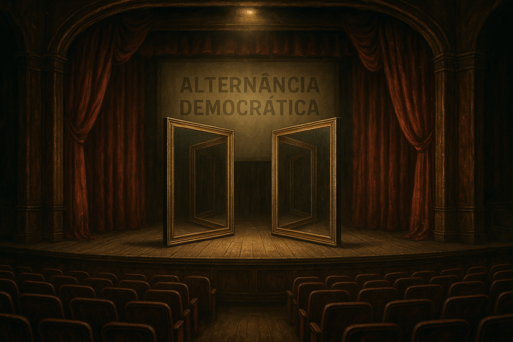

Publicado em 2025-05-20 12:50:37
Há cinquenta anos que Portugal vive numa peça mal encenada, onde os actores principais são sempre os mesmos, apenas trocando de lugar entre o palco e os camarins. PS e PSD, esses dois pilares do teatro nacional da alternância, não governaram o país: administraram um simulacro.
Não, a culpa não é do Chega. O Chega é apenas o espelho rachado que nos devolve o rosto deformado da democracia. O problema é o espelho ter sido partido pelas mãos suadas de quem se revezou no poder desde 1976, lambuzando-se com fundos europeus, nomeações partidárias e leis feitas à medida dos amigos.
Durante décadas, PS e PSD disseram ao povo: "Escolhe". Mas o povo não escolhia o rumo, apenas a cor do verniz. Uma alternância que não muda nada, apenas maquilha o imobilismo. De Cavaco a Guterres, de Sócrates a Passos, de Costa a Montenegro, o país foi sendo prometido e hipotecado ao mesmo tempo.
O resultado? Um Estado capturado, uma economia rendida aos serviços e ao turismo, uma justiça de papel molhado, e um povo que já nem se revolta: encolhe os ombros e vota em branco ou vota por desespero.
A cada ciclo, PS e PSD sentam-se à mesa com os mesmos banqueiros, os mesmos construtores, os mesmos comentadores televisivos. O país real, esse, fica do lado de fora da sala, a ver pela janela enquanto as migalhas caem.
Prometeram desenvolvimento. Deram estagnação com rotundas. Prometeram educação. Deram diplomas sem pensamento. Prometeram justiça. Deram prescrições e arquivos. Prometeram futuro. Deram um presente empacotado em dívida.
E quando as coisas apertam? Apontam o dedo ao "extremismo". Mas quem semeou o terreno fértil para os extremos foi quem plantou a indiferença, regou a desigualdade e colheu o lucro.
Portugal, hoje, não é uma república. É uma novela de má produção, com guião reciclado, figurantes empobrecidos e protagonistas untados em vaselina retórica. Ninguém é responsabilizado, todos se reformam em paz.
A verdadeira mudança não virá dos partidos que já provaram tudo, menos vergonha. Virá do povo que, quando deixar de aplaudir, começará finalmente a escrever o seu próprio enredo.
Porque a democracia não é uma escolha entre dois males conhecidos, mas a coragem de rejeitar o enredo inteiro.
Francisco Gonçalves in Fragmentos de Caos